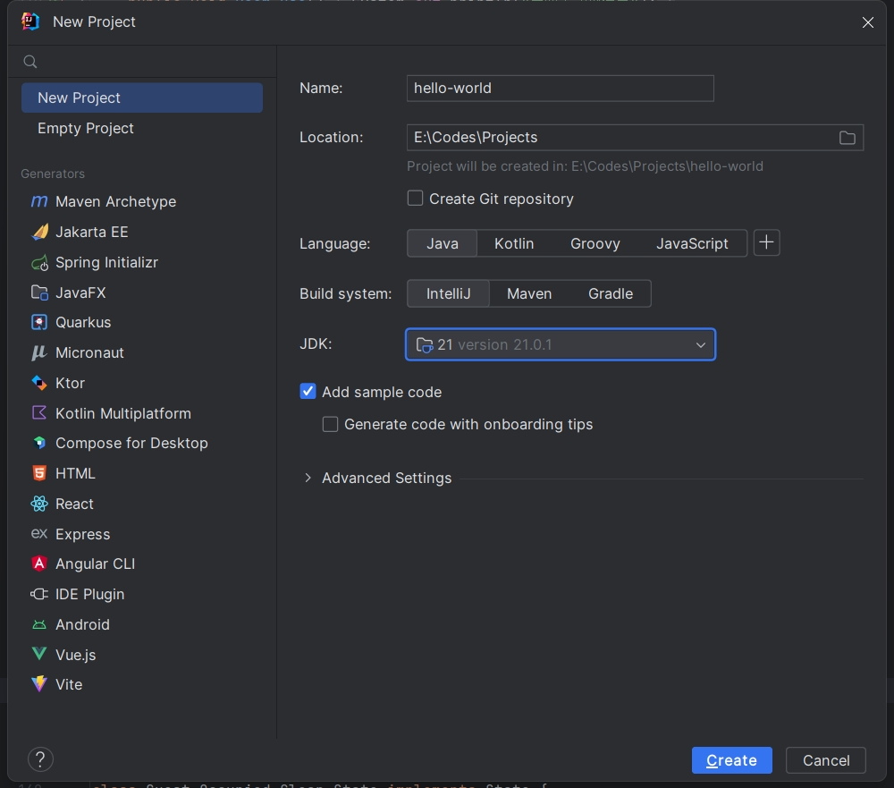
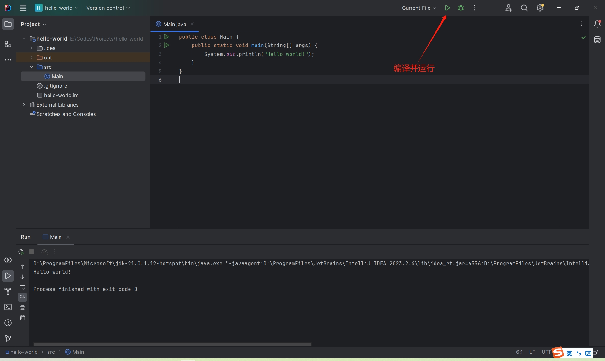

Introduction & Installation¶
前置知识¶
- 无。
Introduction to Java Platform¶
What is Java¶
- Java 是一门高层次，强类型，编译型，基于类的面向对象的通用编程语言。
- Java 保证一次编写，到处运行 (write once, run anywhere)，即Java编译出的字节码文件可以保证在任何系统上的 Java 运行时环境运行。
- Java 保证向前兼容性。
- Java 是一门类 C 语言。
- 从 1995 年开始，历史悠久的 Java 平台积累了兼具广度和可靠性的生态系统和开发者社区。
- Java 至今仍然是最流行、最知名、使用最广的编程语言之一。
History of Java¶
- 1991, James Gosling, C++ and Oak
- 1995, Sun Microsystems and Java 1.0
- 1996, Dynamic Web & Java Applets
- 2006, Java EE, Java SE, Java ME
- 2007, Java visual machine is opened under GPL
- 2009, Sunset of the Sun
- 2014, Java 8 reached General Availability
- 2018, Java 10 started to adopt Time-Based Release Versioning
- Today, Java 17 is current LTS, Java 18 GA, Java 19 RDP 2
Why Java¶
- Easy!
- Cross-Platform
- Rich and Reliable Ecosystem
- Forward evolution with backwards compatibility
- Performance
Why NOT Java¶
- Performance ?
- 相对贫弱的语法特性削弱了对程序员的吸引力。
- JavaScript, Python 等语言的流行和其生态系统的逐步完善。
- Go, Rust 等新星语言的涌现。
- Kotlin, Scala, Clojure, Groovy 等 JVM 平台语言提供了利用 Java 生态系统的其他选项:
- Kotlin 获得了 Google 的青睐和 Android 平台的优先支持。
- Scala 极为灵活的语法和强大的表达能力长期以来收到科学计算领域和分布式数据处理领域的欢迎。
Some Terms of Java¶
- JDK, Java Develop Kit, Java 开发工具包
- JRE, Java Runtime Environment, Java 运行时环境
- JVM, Java Virtual Machine, Java 虚拟机
- OpenJDK, 开源 Java 平台实现的合作组织
- LTS，Long Term Support, 长期支持版本
- IDE, Integrated Development Environment, 集成开发环境
Installation of JDK & IntelliJ IDEA¶
Eclipse Adoptium¶
- Eclipse Adoptium 是一个提供一大堆平台和一大堆不同版本的 JDK 的网站。
- OpenJDK 顾名思义，是开源的，因此很多公司和组织都提供了自己的构建版本。
- 2017年启动的 AdoptOpenJDK 项目是第一个提供一大堆平台和一大堆不同版本的JDK的网站，同时也提供了多种平台的构建和测试平台。
- Eclipse Adoptium 是 AdoptOpenJDK 的继任者 。
- 它们提供的 OpenJDK 分发版称为 Eclipse Temurin 。
Java Version¶
- 作为最新的长期支持版本 LTS，Java 17 将成为本次课程的目标平台。Java 平台保证前向兼容，因此更新版本的 Java 支持本课程讲的绝大多数内容。
- Java 的语法特性和版本绑定，大版本的后续更新大多都是 bug 修复和性能增强。但是 Java7-9 的发布时间分别是 2011-2014-2017，以多年为跨度的更新使 Java 语法特性的进化严重落后于时代。
- 因此，从 [JEP 322, Java10] 开始，采用新的根据固定时间的新版本发布计划和命名方案。Java 将会每六个月固定发布新版本，用于快速滚动开发、预览、发布新语法特性和修改。
Install JDK (Eclipse Temurin)¶
-
所有系统通用: 进网站，点下载，双击安装包。
-
macOS & Homebrew
1 2 3 | |
- Linux
1 2 3 | |
- 如果 Temurin 网站或者 Linux 源下载速度较慢，可以使用TUNA镜像。
- Homebrew如果下载速度慢，需要为其设置代理。
Other OpenJDK Distribution ?¶
- Azul Zulu
- BellSoft Liberica JDK
- 上面两个在业界均有一定应用率，可以信赖。
- 均提供 JDK8 在 ARM Mac 的构建版本。
- 均提供 JavaFX 的支持。
- GraalVM
- Oracle 开发的下一代 JDK 和全新的多语言虚拟机。
- 将 Java 编译为本地代码以消除大部分根本上的性能问题。
- 提供高性能的 Python, R, Ruby 等语言的运行时。
First Command¶
1 2 3 4 | |
CodeLab 0-1: helloworld¶
第i章的 CodeLab 代码位于 codelab/chapter<i>/src。
Helloworld.java
1 2 3 4 5 | |
1 2 3 | |
[JEP222, Java9] jshell: The Java Shell (Read-Eval-Print Loop)
1 2 3 4 5 6 7 | |
JetBrains IntelliJ IDEA¶
- https://www.jetbrains.com/idea/
- 目前最强大、使用最广泛的 Java IDE。
- IntelliJ IDEA Community Edition 是免费开源版本，其包含了基础的 Java 语言支持、分析、构建与版本管理和 Docker 支持。
- IntelliJ IDEA Ultimate 是收费版本，支持性能剖析，企业级框架支持，Web 技术支持，数据库工具，远程协作开发支持。
- 使用
<你的邮箱用户名>@mails.thu.edu.cn可以申请 JetBrains 学生包以获取全部开发工具。
在 IntelliJ IDEA 中，点击 File-New-New Project... 新建一个新的项目，项目名为 hello-world：

IDEA 会自动生成一个 demo 代码，代码内容如下：
1 2 3 4 5 | |
点击右上角的“编译并运行”按钮。

如果你的程序输出：Hello world!，那么，你已经能够成功编译并运行 Java 程序了！
资源链接¶
- Eclipse Adoptium
- JEP
- JDK:
- TUNA镜像
- Azul Zulu
- BellSoft Liberica JDK
- GraalVM
- JetBrains IntelliJ IDEA
- 本章CodeLab
评论
作者: